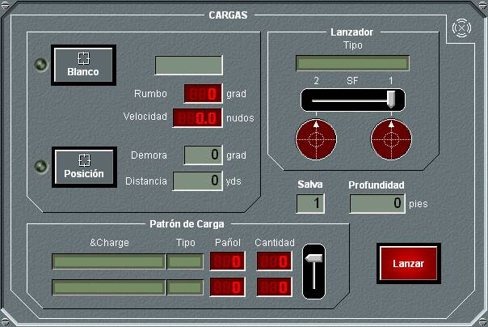

En el panel de detalle de Cargas de Profundidad se muestra, en la parte inferior, los dos tipos de cargas disponibles, la cantidad en el pañol y la cantidad de cargas listas para ser lanzadas de cada tipo. En la parte superior se muestra el tipo de lanzador (a la derecha).
Mientras esté abierto este panel, se presentará en la Pantalla Táctica gráficamente sector y alcance de fuego del lanzador.

Desde este panel se pueden realizar las siguientes acciones:
- Designar un blanco para lanzamiento: Al pulsar el botón Blanco con el Hook sobre un contacto, se designará al contacto en Hook como blanco para el lanzamiento. En los campos Rumbo y Velocidad aparecerán los datos del blanco seleccionado. En el campo demora se mostrará el valor de demora del contacto si la carga es fija o el valor de orientación del lanzador si éste es fijo, mientras que en el campo distancia se mostrará la distancia al blanco si la carga es propulsada o el valor de proyección de la carga si es proyectada. Si se pulsa el botón Blanco sin estar el Hook sobre una traza válida se obtienen los datos de demora / distancia del Hook y se selecciona automáticamente la opción de disparo a Posición.
- Designar una posición para lanzamiento: Al pulsar el botón Posición se designará una posición fija o relativa para el lanzamiento (punto de entrada en el agua de la carga) determinada por la demora, distancia a la unidad propia. Esta posición se toma del Hook al pulsar el botón, o pueden introducirse manualmente. Si es tomada del Hook, el disparo será a posición fija, y en este caso si la unidad propia está en movimiento, los valores de demora y distancia de la posición fija seleccionada se actualizan automáticamente en los campos correspondientes. Si se introducen manualmente, la demora y distancia permanecerá fija, por lo que el disparo será a una posición relativa.
Cuando se realiza cualquiera de las dos acciones anteriores, en la Presentación Táctica se muestra el punto de entrada en el agua de la carga.
- Introducir una profundidad para la activación de la carga. Esta profundidad debe estar comprendida entre los límites superior e inferior de profundidad de operación de la carga.
- Elegir el tipo de carga a lanzar, utilizando la barra de desplazamiento correspondiente.
- Lanzar la carga de profundidad, pulsando el botón Fuego, que lanza una sola carga o Salva, que lanza un número predefinido de cargas. En el caso de disparo de salva, cuando el número predefinido es superior a la cantidad de cargas disponibles, se dispara el total de cargas disponibles.
El lanzamiento no se efectúa si la unidad designada no está a una altura menor o igual a cero, y si no está dentro del sector de fuego del lanzador. Tampoco se efectúa en el caso de lanzamiento desde una altura fuera de los límites de altura de lanzamiento para la carga.
Si el lanzador tiene capacidad de recarga, y existen cargas en el pañol, se realiza ésta automáticamente hasta la capacidad completa del lanzador, tras un tiempo predefinido de recarga.